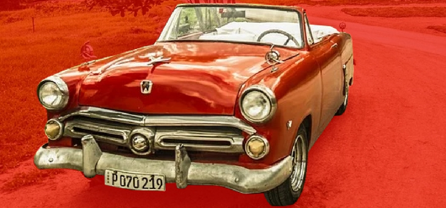
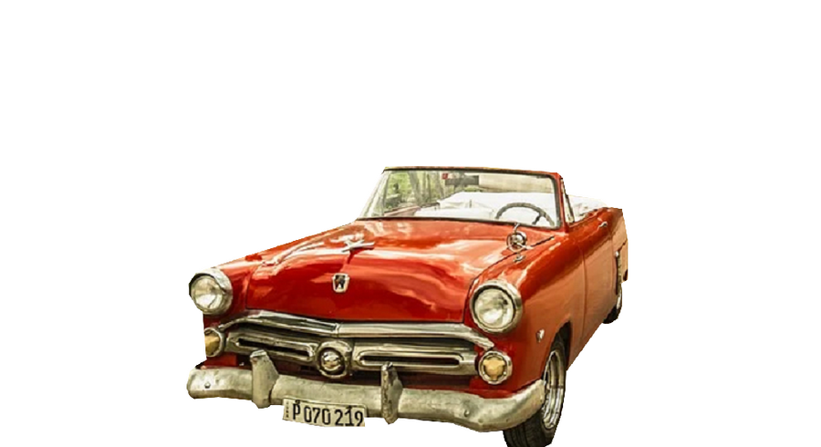
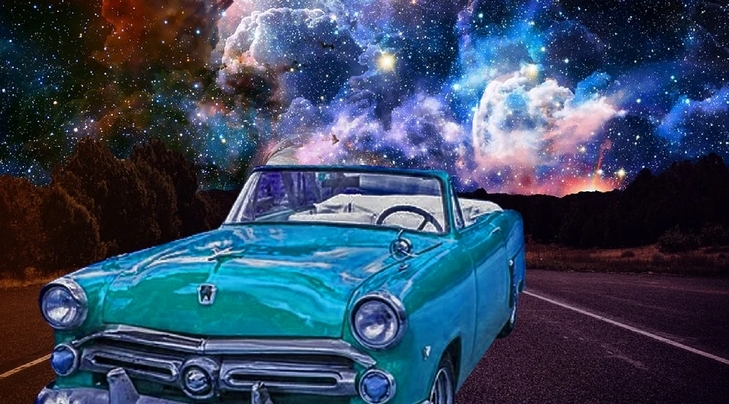

Neste breve tutorial aprenderemos a fazer uma montagem no Photoshop e trabalhar com alguns ajustes. Para isso você precisará das duas imagens nomeadas Car.png e Road.png, que constam na pasta de imagens do curso.
1. Abra o Photoshop, clique em Arquivo → Novo para criar um novo arquivo.
2. Na janela de configurações, defina as propriedades do arquivo da seguinte maneira:
Nome: Montagem Photoshop;
Tipo de Documento: Web;
Tamanho da Prancheta: Web Largo (1920, 1080)
Resolução: 300;
3. Em seguida, clique em Ok.
1. Na janela de Camadas, clique no botão Criar nova camada.
2. Clique duas vezes sobre o nome da nova camada e digite Estrada.
3. Crie mais uma camada e nomeie como Carro.
4. Se preciso arraste a camada Carro para que esteja acima da camada Estrada.
Agora vamos inserir as duas imagens que utilizaremos na montagem.
1. Pressione Ctrl+O e abra os arquivos Car.png e Road.png.
2. O que faremos é selecionar as partes que desejamos de cada arquivo e colar em nosso novo arquivo. Esse hábito é uma boa prática de trabalho pois evita salvarmos alterações numa imagem original, poupando-nos de transtornos futuros.
3. Com o arquivo do carro aberto, pegue a ferramenta Laço Poligonal (L), e com o zoom aumentado, e utilizando a barra de espaço para mover a tela, comece a traçar uma seleção ao redor do carro. Quando tiver dado uma volta completa, clique duas vezes para finalizar. A seleção deve estar como na da imagem a seguir:
5. Clique no menu Editar → Copiar.
6. Alterne para o arquivo Montagem Photoshop nas guias acima do espaço de trabalho.
7. Selecione a camada Carro no Gerenciador de Camadas.
8. Clique no menu Editar → Colar.
9. Pegue a ferramenta Mover (V).
10. Utilizando as alças, aumente o carro com a tecla Alt pressionada.
11. Pressione Enter.
12. Se necessário mova para baixo com a tecla Shift pressionada.
13. Seu arquivo deve estar como na imagem abaixo:
Nossa última etapa é inserir o fundo.
1. Alterne para o arquivo Road.
2. Clique na ferramenta Máscara Retangular e pressione Ctrl+A para selecionar tudo.
3. Clique no menu Editar → Copiar.
4. Alterne para o arquivo Montagem Photoshop.
5. Selecione a camada Estrada
6. Clique no menu Editar → Colar.
7. Pegue a ferramenta Mover (V).
8. Aumente o tamanho da imagem segurando a tecla Alt até que preencha todo o plano de fundo.
9. Pressione Enter.
Sempre que efetuamos uma montagem precisamos mexer em ajustes da imagem inserida e/ou do fundo, isso porque cada imagem é tomada em condições diferentes, para isso podemos alterar brilho, contraste, saturação entre outras configurações. É claro que algumas montagens são impossíveis, por exemplo você não vai conseguir realismo inserindo um objeto de uma imagem que foi tomada à noite sob luz artificial, numa foto tomada em pleno dia sob luz natural. Vejamos alguns ajustes que ajudam a combinar um recorte com o fundo:
1. Selecione a camada Carro.
2. Clique no menu Imagem → Ajustes → Sombras e Destaques.
3. Diminua o valor de Volume para Sombras até o mínimo, e aumente para Destaques até o máximo.
4. Clique em Ok.
5. Agora vamos alterar as cores para combinar com o fundo.
6. Clique no menu Imagem → Ajustes → Matiz e Saturação.
7. Deslize a barra de Matiz até encontrar uma combinação verde-azulada que combine com o fundo.
8. Lembre-se de salvar sua imagem.
9. Veja o resultado:
